Next: Usage
Up: Dimension Reduction Regression in
Previous: Dimension Reduction Regression in
In the general regression problem, we have a response of
dimension  (usually, 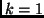) and
(usually, 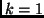) and  -dimensional predictor 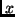,
and the goal is to learn about how the conditional distributions
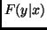 as varies through its sample space. In parametric
regression, we specify a functional form for the conditional
distributions that is known up to a few parameters. In
nonparametric regression, no assumptions are made about 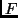, but
progress is really only possible if the dimensions and are
small.
Dimension reduction regression is one intermediate
possibility between the parametric and nonparametric extremes. In
this setup, we assume without loss of information that the
conditional distributions can be indexed by
-dimensional predictor 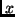,
and the goal is to learn about how the conditional distributions
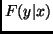 as varies through its sample space. In parametric
regression, we specify a functional form for the conditional
distributions that is known up to a few parameters. In
nonparametric regression, no assumptions are made about 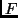, but
progress is really only possible if the dimensions and are
small.
Dimension reduction regression is one intermediate
possibility between the parametric and nonparametric extremes. In
this setup, we assume without loss of information that the
conditional distributions can be indexed by  linear
combinations, or for some probably unknown 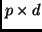 matrix
linear
combinations, or for some probably unknown 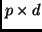 matrix
This representation always holds trivially, by setting 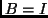, the
 identity matrix, and so the usual goal is to find the
of lowest possible dimension for which this representation
holds. If (1) holds for a particular , then it also
holds for , where is any full rank matrix, and hence
the unique part of the regression summary is the subspace that is
spanned by , which we denote
identity matrix, and so the usual goal is to find the
of lowest possible dimension for which this representation
holds. If (1) holds for a particular , then it also
holds for , where is any full rank matrix, and hence
the unique part of the regression summary is the subspace that is
spanned by , which we denote
 . Cook (1998) provides a
more complete introduction to these ideas, including discussion of
when this subspace, which we call the central subspace,
exists, and when it is unique.
In this paper, we discuss software for estimating the subspace
spanned by , and tests concerning the dimension
based on dimension reduction methods. This software was written
using , but can also be used with
Splus. Most, but not all, of the methods available here are also
included in the
Xlisp-Stat program
Arc, Cook and
Weisberg (1999). The platform allows use of dimension reduction
methods with existing statistical methods that are not readily available in
Xlisp-Stat, and hence in Arc. For example, the code is more suitable for
Monte Carlo experimentation than Arc. In addition, includes a much wider
array of options for smoothing, including multidimensional smoothers.
On the other hand,
Arc takes full advantage of the dynamic graphical capabilities of Xlisp-Stat, and at
least for now the graphical summaries of dimension reduction regression are
clearly superior in Arc. Thus, there appears to be good reason to have
these methods available using both platforms.
Cook (1998) provides the most complete introduction to this area.
See also Cook and Weisberg (1994) for a more gentle introduction
to dimension reduction. In this paper we give only the barest
outline of dimension reduction methodology, concentrating on the
software.
Suppose we have data 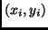, for 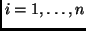 that are
independent and collected into a matrix
. Cook (1998) provides a
more complete introduction to these ideas, including discussion of
when this subspace, which we call the central subspace,
exists, and when it is unique.
In this paper, we discuss software for estimating the subspace
spanned by , and tests concerning the dimension
based on dimension reduction methods. This software was written
using , but can also be used with
Splus. Most, but not all, of the methods available here are also
included in the
Xlisp-Stat program
Arc, Cook and
Weisberg (1999). The platform allows use of dimension reduction
methods with existing statistical methods that are not readily available in
Xlisp-Stat, and hence in Arc. For example, the code is more suitable for
Monte Carlo experimentation than Arc. In addition, includes a much wider
array of options for smoothing, including multidimensional smoothers.
On the other hand,
Arc takes full advantage of the dynamic graphical capabilities of Xlisp-Stat, and at
least for now the graphical summaries of dimension reduction regression are
clearly superior in Arc. Thus, there appears to be good reason to have
these methods available using both platforms.
Cook (1998) provides the most complete introduction to this area.
See also Cook and Weisberg (1994) for a more gentle introduction
to dimension reduction. In this paper we give only the barest
outline of dimension reduction methodology, concentrating on the
software.
Suppose we have data 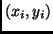, for 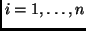 that are
independent and collected into a matrix  and a vector
and a vector  if
and a matrix if 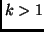. In addition, suppose we have
nonnegative weights
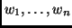 whose sum is
if
and a matrix if 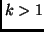. In addition, suppose we have
nonnegative weights
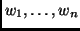 whose sum is  ;
if unspecified, we take all the 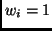. Generally following Yin
(2000), a procedure for estimating
and for obtaining
tests concerning is:
;
if unspecified, we take all the 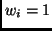. Generally following Yin
(2000), a procedure for estimating
and for obtaining
tests concerning is:
- Scale and center as
where
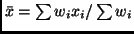 is the vector of weighted column
means,
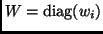, and
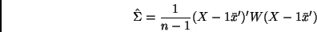
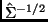 is any square root of the inverse of the
sample covariance matrix for (for example, using a singular
value decomposition) and 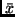 is a vector of weighted
sample means. In this
scaling, the rows of  have zero mean and identity sample covariance
matrix.
have zero mean and identity sample covariance
matrix.
- Use the scaled and centered data to find a
dimension symmetric
matrix
 that is a consistent
estimate of a population matrix
that is a consistent
estimate of a population matrix  with the property that
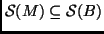. For most procedures, all we can guarantee is
that tells us about a part, but not necessarily all, of
. Each of the methods (for example, sir, save, and
phd) have a different method for selecting .
with the property that
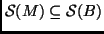. For most procedures, all we can guarantee is
that tells us about a part, but not necessarily all, of
. Each of the methods (for example, sir, save, and
phd) have a different method for selecting .
- Let
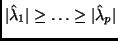 be the
ordered absolute eigenvalues
of , and
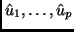 the
corresponding eigenvectors of .
In some applications (like phd) the eigenvalues may be negative.
- A Test that the dimension 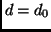 against the alternative that 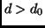 is based on a partial sum of eigenvalues of the form:
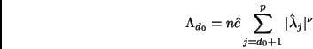
where is a method-specific term, and 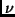 is generally
equal to 1, but it is equal to 2 for phd.
The distribution of these partial sums depends on assumptions and on
the method of obtaining .
- Given , the estimate of
is the span of the first
eigenvectors. When viewed as a subspace of 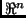, the basis
for this estimated subspace is
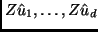. These
directions can then be back-transformed to the -scale. Given the
estimate of
, graphical methods can be used to recover
information about , or about particular aspects of the conditional
distributions, such as the conditional mean function.
Next: Usage
Up: Dimension Reduction Regression in
Previous: Dimension Reduction Regression in
Sandy Weisberg
2002-01-10